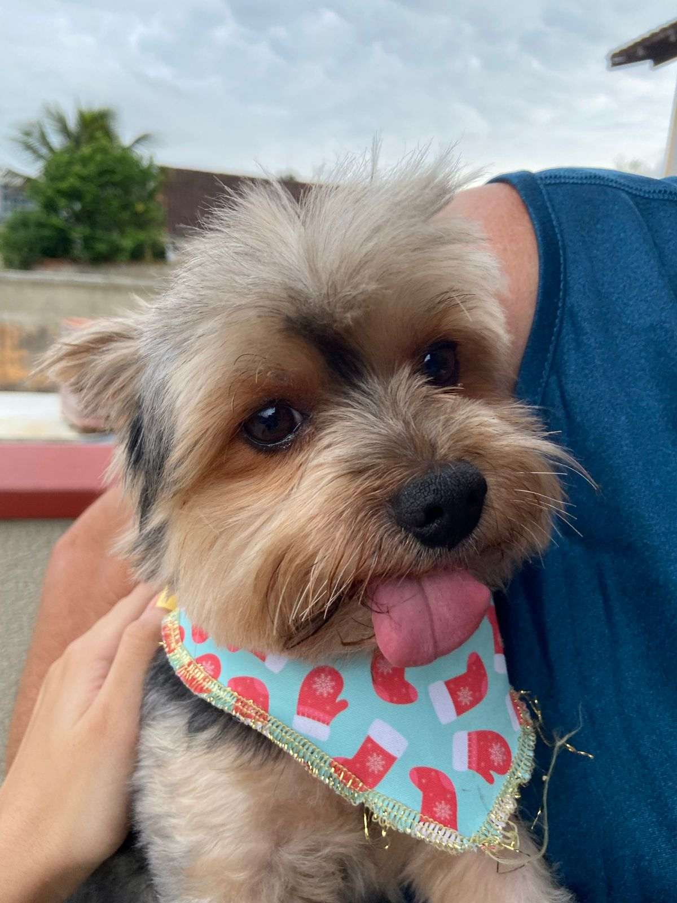
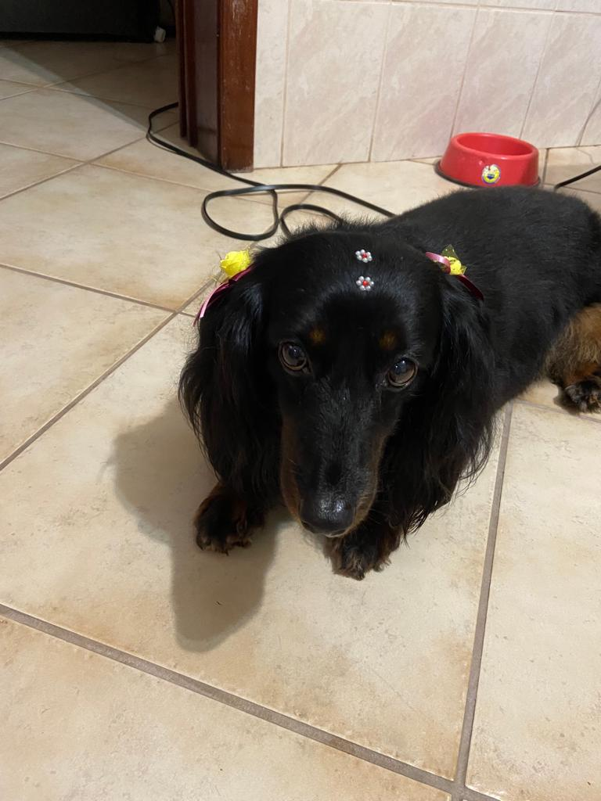

Mia é a caçula, com 1 ano e 7 meses. Ela é cachorro que late, mas não morde.
É fofa, ama brincar de bola e roubar a meia dos outros.

Maris vai fazer 7 anos. Ele é arisco no começo, mas depois que pega confiança fica fofo e carente.
As vezes ele da uns surtinhos do nada. Ele parece um bichinho de pelúcia, muito fofinho.

Pietra é a mais velha, está chegando aos 11 anos e é uma querida.
Sempre deita de barriga pra cima (é vendida), ama dormir e receber carinho.